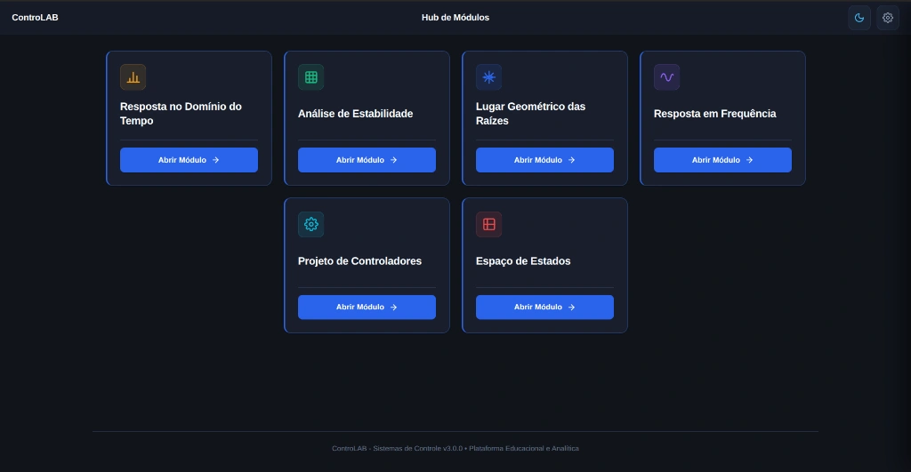
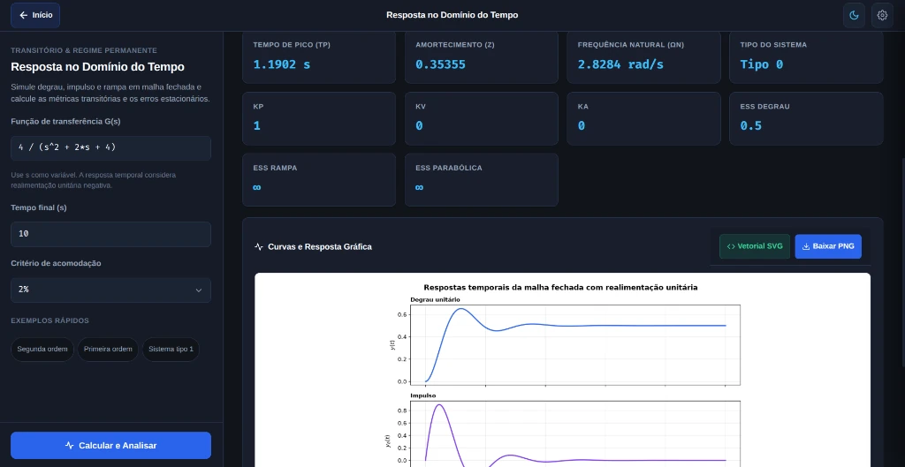
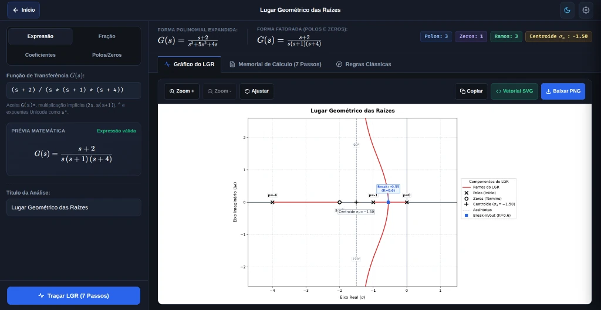
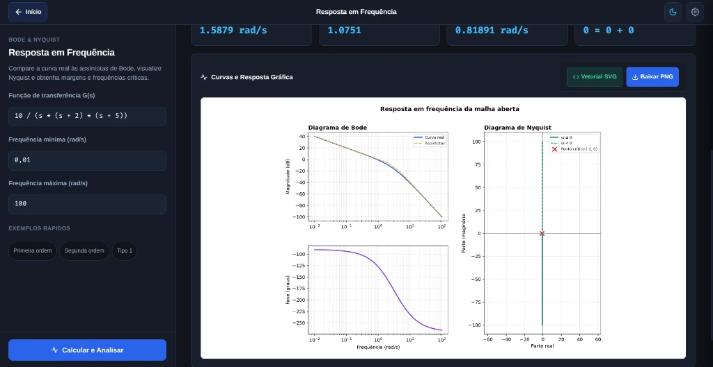
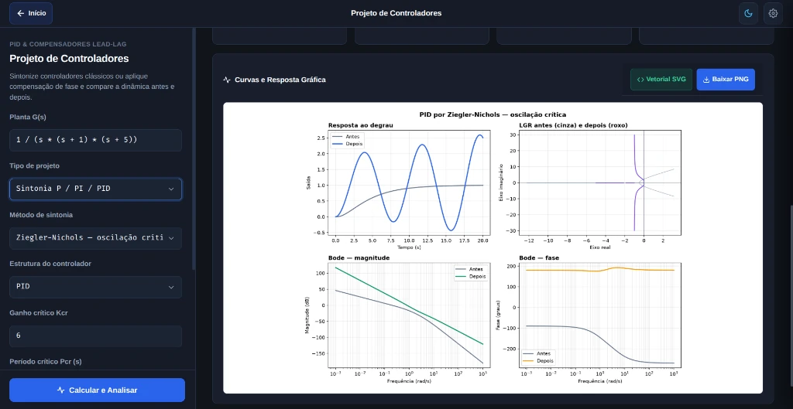
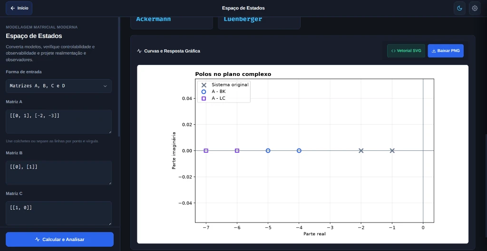

Hub Central Integrado
Grid dinâmico com acesso direto a todos os 6 módulos analíticos de sistemas de controle.
Plataforma aberta, moderna e completa para Engenharia e Sistemas de Controle. Simulação rigorosa, cálculo analítico e projeto em múltiplos domínios: Lugar Geométrico das Raízes (LGR), Estabilidade por Routh-Hurwitz, Resposta no Tempo (Degrau e Impulso), Análise em Frequência (Bode e Nyquist) e Síntese de Controladores PID e Compensadores. Motor científico em Python, 100% offline para Linux, Windows e Android.






Ambiente gráfico fluido em tema escuro projetado para máxima produtividade com renderização gráfica em alta fidelidade e memorial analítico passo a passo.
Grid dinâmico com acesso direto a todos os 6 módulos analíticos de sistemas de controle.
Curvas de resposta ao degrau, impulso e rampa com tabela de métricas completas (%OS, ts, tp, tr, polos).
Traçado analítico de Evans com ramos, assíntotas, centroide, dispersão e memorial de cálculo passo a passo.
Diagramas de Bode (magnitude em dB e fase em graus) e Nyquist polar com margens de ganho e fase.
Sintonia PID pelos métodos clássicos de Ziegler-Nichols e projeto analítico de compensadores Lead-Lag.
Entrada matricial, cálculo de controlabilidade, observabilidade, polos no plano complexo e observadores.
Digite como quiser: (s+2)/(s(s+1)(s+4)), potências s^3 ou expoentes Unicode s³, multiplicação implícita e coeficientes numéricos diretos.
Ganhos varridos com precisão logarítmica de \(10^{-3}\) a \(10^4\) com ponto zero exato, capturando trajetórias que softwares simplificados truncam ou distorcem.
Textos de polos, zeros, centroide e pontos de quebra protegidos por badges translúcidos com offsets adaptativos. Gráficos limpos e legíveis para ensino e pesquisa.
Gere imagens nítidas em alta resolução (300 DPI) para provas, relatórios e slides, ou baixe o arquivo vetorial SVG escalável para trabalhos acadêmicos no LaTeX / Overleaf.
O ControLAB detecta automaticamente seu sistema operacional e formato de pacote (AppImage, deb, rpm, exe ou apk) e avisa discretamente quando houver nova versão no GitHub Releases.
Todos os cálculos numéricos e algébricos rodam localmente no dispositivo. Sem necessidade de internet, sem telemetria, sem cadastro e sem dependência de nuvem.
Versão estável atual: v3.0.0. Binários autocontidos para desktop e dispositivos móveis.
Ubuntu, Debian, Fedora, openSUSE, Arch e distribuições compatíveis.
Não! Embora o módulo de Lugar Geométrico das Raízes (LGR) seja o primeiro disponibilizado com memorial analítico completo dos 7 passos clássicos de Evans, o ControLAB é uma suíte completa de Engenharia de Controle. O aplicativo está estruturado com módulos dedicados para Análise de Estabilidade por Routh-Hurwitz, Resposta no Domínio do Tempo (degrau e impulso), Resposta em Frequência (diagramas de Bode e Nyquist) e Projeto de Controladores (sintonia PID e compensadores Lead-Lag).
Não! Os pacotes compilados para Windows (.exe), Linux (.AppImage, .deb, .rpm) e Android (.apk) já trazem o runtime Python e todas as bibliotecas de cálculo matemático (NumPy, SciPy, Matplotlib, Python-Control e SymPy) embarcados de forma autocontida.
A partir da versão 2.0.0, o Windows conta exclusivamente com um instalador executável oficial (.exe NSIS). Ele realiza a instalação completa dos arquivos diretamente no computador, cria atalhos no Menu Iniciar e na Área de Trabalho e registra o desinstalador padrão do sistema, sem necessidade de configuração manual.
O aplicativo ControLAB possui verificação integrada conectada ao GitHub Releases. Ele detecta automaticamente o sistema operacional e o tipo de pacote instalado e avisa visualmente quando houver uma nova versão disponível para download direto.
Basta baixar o arquivo, conceder permissão de execução com o comando chmod +x ControLAB-*.AppImage (ou clicando com o botão direito → Propriedades → Permitir execução como programa) e clicar duas vezes para abrir.
Sim, 100% offline. Todo o motor de cálculo, renderização do KaTeX e geração de imagens funcionam localmente no seu dispositivo.
Sim, o ControLAB é software livre sob a Licença MIT. Você pode usá-lo livremente para estudos, aulas, pesquisas e trabalhos de engenharia.